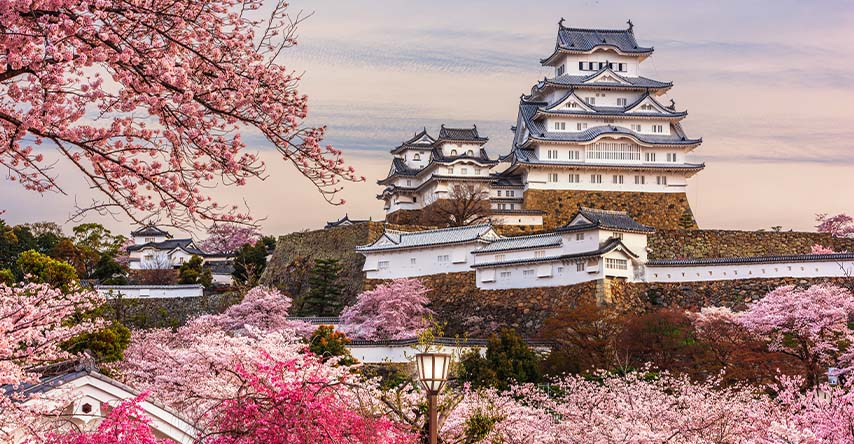
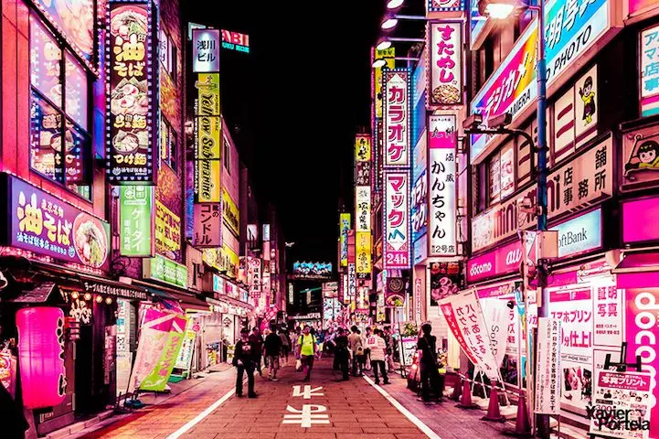

Um pouco sobre esse sonho...
Um dos meus maiores sonhos é viajar para o Japão. Tenho muita curiosidade e vontade de conhecer o país, principalmente por causa da sua cultura e dos seus costumes.
Também por ter descendência japonesa quero conhecer o país, pois seria uma oportunidade de conhecer de perto parte da cultura que também faz parte da minha história.

Além de querer conhecer os lugares que vejo nos filmes e séries em que eu assisto. E fazer comprinhaaasss kkkk
